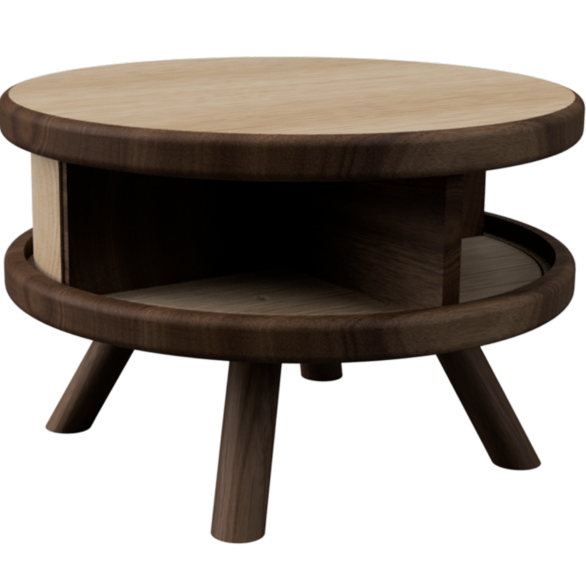
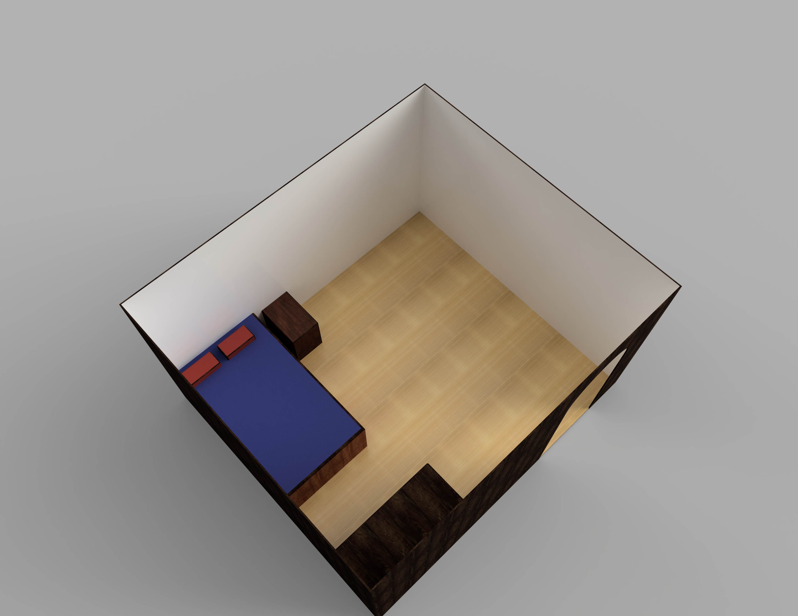

QUICK LINKS
INSTAGRAM FEEDS




The rendered image featured here is a design project that I have worked on, which utilises the components of the fusion360 software to create a workable design.
This project demonstrates skill in the effective application of fusion360, while also showing how model-making is achieved, and model replication is made. This project was later 3-D printed, with some components being laser cut as a result of the process.
By identifying a genuine need for this project, I followed the double diamond design process in creating this design through multiple iterations and refining the concept idea until I was satisfied with the final result. This project demonstrates what a major project or design project could look like from a years 10-12 perspective within the Design & Technology Syllabus, and how it would be suitable to test individual skills.
Download PDF
This is my mechatronics design project that I built in 2022 as a part of my Technology degree at ACU. During this course, I was able to use a laser cutting machine and 3-D printer to create mechanical components for a machine.
Then with these mechanical components, I was able to prototype a design to test whether the mechanisms worked as intended. With the addition of an Arduino UNO device, which was soldered together and programmed via the Arduino C++ program, I created an automated mechanised device that encompasses the modern electromechanical technologies of the 21st century.
This project is not only proof of concept in action, but is also a good teaching example of how to make mechanised items. I intend this project to be most suitable for Years 9-12 as apart of engineering or design & technology.
Download PDF
The image featured here is one of my final design projects that I have made during my time at ACU. In this project, I created a redesigned table which focused on decomposing an existing design and innovating the idea.
Through a series of research, investigation, testing, and experimenting, I eventually came to the conclusion of this design as I felt it was the most appropriate for the user-context it was in.
This project is aimed towards the Industrial Arts (Timber) unit area, however, it does show relevance towards the Design & Technology syllabus too. As this project is made using natural Australian sourced Tasmanian Blackwood and FSC certified American Oak timber, it is a project that encourages sustinability in design, and emphasises the the lifecycle of a product.
Download PDF